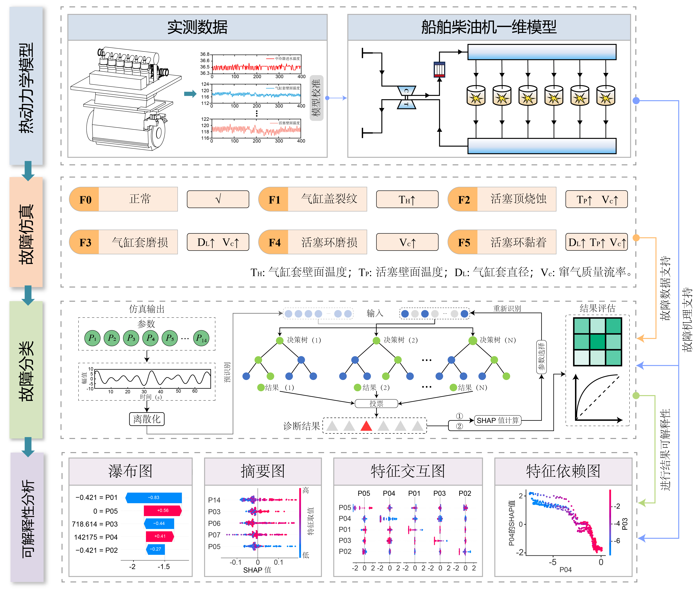
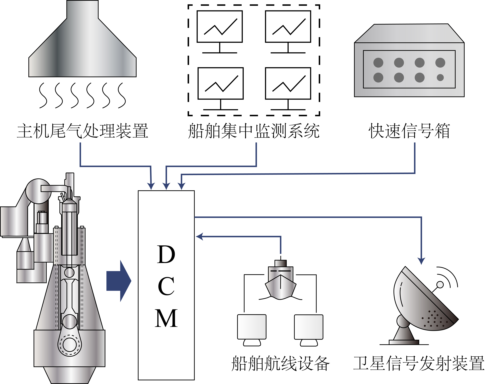
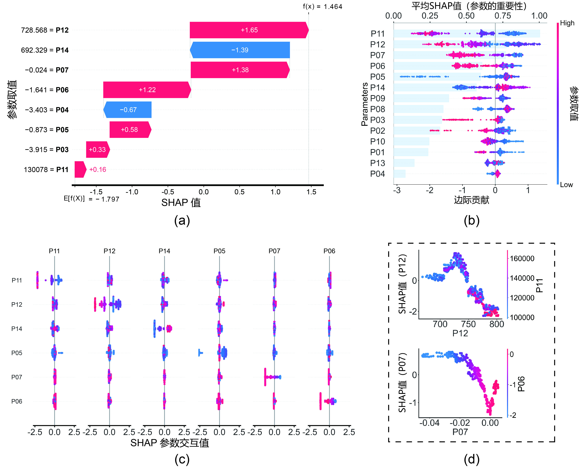

研究动机
在海洋工程与预测与健康管理 (PHM) 领域，行业面临两大长期瓶颈：
- 数据稀缺： 船舶柴油机（特别是远洋船舶主机）是船舶的心脏，一旦在海上发生严重故障，可能导致失去动力、搁浅甚至海难。因此，它们在设计时的安全系数极高，本身发生严重故障的概率就很低。此外，船舶行业执行严格的预防性维护体系（如基于运行小时数的定时检修）。绝大多数磨损部件在真正损坏引发故障数据之前，就已经被强制更换了。这导致目前拥有大量的健康数据和早期磨损数据，但极其缺乏完全失效或严重故障的真实数据。
- “黑盒”问题： 由于深度学习模型通常缺乏透明度，若无法解释故障的物理成因，工程师很难对其建立信任。在受船级社严格监管的航运业，这种不透明性尤为关键。如果 AI 误判引发拉缸或曲轴断裂，而系统无法追溯错误是源于数据偏差、算法缺陷还是传感器漂移，这种不可追溯性在海事事故调查中是不可被接受的。
为应对上述挑战，我们提出了 TSRF 方法。通过将基于物理的机理模型与先进的可解释性技术相融合，并利用高保真仿真模型生成解决了数据稀缺问题，并确保诊断决策符合热力学基本原理。
方法论
本研究的工作流程包含以下四个主要阶段（如图所示）：
- 热力学建模： 本文采用了一维热动力学模型进行建模。这种模型不关注组件内部的微观应力，只关注系统层面的热力学参数（如温度、压力、流量）变化，能够迅速获得系统对故障的响应。如果采用三维流体动力学（CFD）或有限元分析（FEA）来模拟故障（例如模拟气缸盖裂纹的微观应力），计算过程将极其复杂且耗时。
- 故障注入： 本文通过微调一维热动力学模型中的关键物理参数来模拟故障。这意味着将“零部件损坏”等效映射为“物理参数的异常变化” 。由于故障诊断模型（如本文的随机森林）通过传感器数据（温度、压力）来判断故障。而传感器看不见零部件上微米级的损伤，它只能感测到零部件故障所导致的热工参数变化。因此，只要仿真模型输出的热工参数特征与真实故障导致的特征一致，对于训练诊断算法来说，这两者就是等效的。
- 基于 SHAP 的特征选择： 本文利用 SHAP 值定量识别关键特征。在处理高维数据（多个传感器参数）时，通常会面临“维度灾难”和“可解释性差”两个难题。而SHAP可以较好地同时解决这两个问题。首先，船舶柴油机是一个复杂系统，热力学参数众多。如果把所有参数（如14个初始参数）都输入模型，不仅计算量大，还可能因为参数间的强相关性（多重共线性）导致模型过拟合，降低泛化能力。因此，需要剔除不重要的参数，保留最核心的“症状”指标。此外，相较于传统方法，如卡方检验(Chi-Square)、递归特征消除 (RFE) 和 Gini 指数，SHAP不仅能定量计算每个参数对预测结果的贡献值，还能揭示参数的方向性影响（正向或负向）以及参数间的依赖关系。这为后续的物理机理分析提供了数据支持。
- 分类诊断： 本文利用随机森林 (RF) 分类器进行故障诊断。相较于深度学习这类“数据饥渴型”算法，随机森林在小样本下精度更高、能更好地抗过拟合、且与SHAP适配程度更好。

图 1： TSRF 方法架构图。
一维热动力学建模
本文所讨论的是一台低速、六缸、二冲程船用柴油发动机，配备有涡轮增压器和中冷器。模型建立后，通过DCM系统采集的真实数据进行验证与校准。
柴油机一维热动力学模型结构
发动机系统被离散化为流体管路与功能组件网络：
- 核心元件： 包括系统边界（SB1，SB2）、进排气歧管（PL1，PL2）、涡轮增压器（TC1）、中冷器（CO1）以及六个气缸（C1～C6）。
- 气路系统： 进气系统包含管道1（压气机）及管道2、3（中冷器）；气缸进、排气管分别为管道4~9和10~15；排气系统则由连接涡轮增压器的管道16、17组成。
- 数据采集： 六个监测点（MP1至MP6）用于监测关键的发动机热工参数。
校准与验证
在进行故障注入前，将模型基于实测数据进行了校准：
- 数据采集： DCM系统对主机、辅机及航行相关的多维数据进行多源采集，数据源包括主机控制、集中监测及航行设备等。
- 数据预处理： DCM系统以10秒为周期存储慢速数据，并每60秒计算均值写入本地数据库。
- 模型验证： 关键参数（如功率、排气温度）的偏差控制在 ±5% 误差范围内 。

图 2： 柴油机一维热力学模型示意图。

图 5： 数据采集模块 (DCM)。
故障注入机制
由于一维模型无法直接表征 3D 结构缺陷，我们采用了现象学映射法，将物理退化机制转化为等效的热力学参数偏移。
| 故障类型 | 物理机制 | 建模实现 |
|---|---|---|
| F1: 气缸盖裂纹 | 热传导受阻。 | 将气缸盖表面温度 ($T_H$) 提升至 346°C。 |
| F2: 活塞烧蚀 | 材料缺损与密封失效。 | 提高活塞温度 ($T_P$) + 轻微窜气 (0.01 kg/s)。 |
| F3: 缸套磨损 | 磨损导致缸径增大。 | 增大缸径 + 大量窜气 (0.03 kg/s)。 |
| F4: 活塞环磨损 | 气体泄漏。 | 调节窜气质量流量 (0.02 kg/s)。 |
| F5: 活塞环粘着 | 摩擦力增大与密封失效。 | 缸径变化 + 缸套温度升高 + 窜气。 |
可解释性分析
本研究的一大核心创新在于将重心从“故障是什么？”转向“为何判定为该故障？”。我们通过活塞环磨损 (F4) 的实例分析展示了这一能力：
- 局部解释 (瀑布图)： 瀑布图解析了具体的预测逻辑。例如，模型预测“活塞环磨损”，是因为窜气热流 (P06) 和窜气质量流量 (P07) 呈现特定数值，从而提高了该故障的预测概率。这符合物理规律：活塞环磨损破坏了密封性，导致气体泄漏（窜气）。
- 全局解释 (蜂群图)： 全局分析揭示了模型习得的普遍规律。我们发现涡轮前排气压力 (P11) 的低值是活塞环磨损的强有力指标。从物理角度看这具有一致性：磨损的活塞环导致气体从气缸泄漏，从而减少了驱动涡轮的可用能量。

图 11： 基于 SHAP 值的活塞环磨损 (F4) 故障分析：(a) 瀑布图；(b) 蜂群图；(c) 交互图；(d) 依赖图。
点击查看 SHAP 可视化代码 (Python)
若您对上述图表的实现细节感兴趣，以下是用于生成瀑布图、蜂群图、交互图和依赖图的示例代码。👇
研究亮点
我们认为本项工作为该领域做出了以下关键贡献：
- 建立了针对船用柴油机燃烧室组件五种典型故障的参数化模型。
- 通过与多种特征选择方法的对比，验证了 SHAP 方法的有效性。
- 通过融合数据驱动方法与热力学机理模型，为可解释的故障诊断提供了新视角。